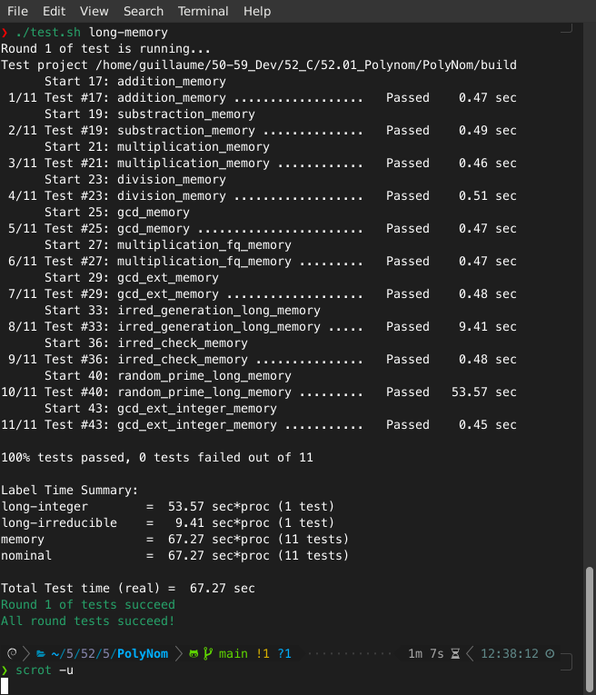

<!DOCTYPE html>
<html lang="en">
  <head>
    <meta charset="utf-8" />
    <meta name="viewport" content="width=device-width, initial-scale=1.0, maximum-scale=1.0, user-scalable=no" />

    <title></title>
    <link rel="stylesheet" href="dist/reveal.css" />
    <link rel="stylesheet" href="dist/theme/black.css" id="theme" />
    <link rel="stylesheet" href="plugin/highlight/zenburn.css" />
	<link rel="stylesheet" href="css/layout.css" />
	<link rel="stylesheet" href="plugin/customcontrols/style.css">


    <script defer src="dist/fontawesome/all.min.js"></script>

	<script type="text/javascript">
		var forgetPop = true;
		function onPopState(event) {
			if(forgetPop){
				forgetPop = false;
			} else {
				parent.postMessage(event.target.location.href, "app://obsidian.md");
			}
        }
		window.onpopstate = onPopState;
		window.onmessage = event => {
			if(event.data == "reload"){
				window.document.location.reload();
			}
			forgetPop = true;
		}

		function fitElements(){
			const itemsToFit = document.getElementsByClassName('fitText');
			for (const item in itemsToFit) {
				if (Object.hasOwnProperty.call(itemsToFit, item)) {
					var element = itemsToFit[item];
					fitElement(element,1, 1000);
					element.classList.remove('fitText');
				}
			}
		}

		function fitElement(element, start, end){

			let size = (end + start) / 2;
			element.style.fontSize = `${size}px`;

			if(Math.abs(start - end) < 1){
				while(element.scrollHeight > element.offsetHeight){
					size--;
					element.style.fontSize = `${size}px`;
				}
				return;
			}

			if(element.scrollHeight > element.offsetHeight){
				fitElement(element, start, size);
			} else {
				fitElement(element, size, end);
			}		
		}


		document.onreadystatechange = () => {
			fitElements();
			if (document.readyState === 'complete') {
				if (window.location.href.indexOf("?export") != -1){
					parent.postMessage(event.target.location.href, "app://obsidian.md");
				}
				if (window.location.href.indexOf("print-pdf") != -1){
					let stateCheck = setInterval(() => {
						clearInterval(stateCheck);
						window.print();
					}, 250);
				}
			}
	};


        </script>
  </head>
  <body>
    <div class="reveal">
      <div class="slides"><section  data-markdown><script type="text/template"><!-- .slide: class="drop" -->
<div class="" style="position: absolute; left: 0px; top: 0px; height: 700px; width: 960px; min-height: 700px; display: flex; flex-direction: column; align-items: center; justify-content: center" absolute="true">

# PolyNom

🎯 A library to manipulate polynomials over finite fields.

🔐 Design for cryptographic operations.

🚀 Explore this project on [GitHub](https://github.com/groumage/PolyNom)!

https://github.com/groumage/PolyNom/
</div></script></section><section  data-markdown><script type="text/template"><!-- .slide: class="drop" -->
<div class="" style="position: absolute; left: 0px; top: 0px; height: 700px; width: 960px; min-height: 700px; display: flex; flex-direction: column; align-items: center; justify-content: center" absolute="true">

## Technical overview

💻 Technology stacks:
- C language
- [GMP library](https://gmplib.org/)
- [GP](https://pari.math.u-bordeaux.fr/)<sup id="fnref:1" role="doc-noteref">1</sup>
- [Valgrind](https://valgrind.org/)
- [Gcovr](https://github.com/gcovr/gcovr)


<div class="footnotes" role="doc-endnotes">
<ol>
<li id="fn:1" role="doc-endnote" class="footnote"><p>

An interactive shell providing fast computation functions in number theory.

</p></li></ol>
</div>
</div></script></section><section  data-markdown><script type="text/template"><!-- .slide: class="drop" -->
<div class="" style="position: absolute; left: 0px; top: 0px; height: 700px; width: 960px; min-height: 700px; display: flex; flex-direction: column; align-items: center; justify-content: center" absolute="true">

## Test-Driven Development

 🔎 GP generates random inputs and expected outputs that PolyNom's functions should return.
 
<style> .mermaid { min-width: 50%; max-width: 50%; } .mermaid foreignObject {overflow: visible;} </style>


<div class="mermaid">
graph TB
	GP([GP])
	Polynom([PolyNom])
	Valgrind([Valgrind])
	GenerateInput["Generate inputs of unit tests (1)"]
	ExpectedResults["Expected results (with GP) (2)"]
	ActualResults["Actual results (with PolyNom) (3)"]
	KO([KO])
	AreEqual{{"Are equal?"}}
	Memory{{"Memory leaks?"}}
	OK([OK])

	GP --> GenerateInput
	GP --> ExpectedResults
	GenerateInput --> ExpectedResults
	GenerateInput --> ActualResults
	Polynom --> ActualResults
	ExpectedResults --> AreEqual
	ActualResults --> AreEqual
	Valgrind --> Memory
	Memory -- "YES" --> KO
	Memory -- "NO" --> OK
	AreEqual -- "YES" --> Memory
	AreEqual -- "NO" --> KO
	
	style GP stroke:white;
	style Polynom stroke:white;
	style GenerateInput stroke:white;
	style ExpectedResults stroke:white;
	style ActualResults stroke:white;
	style AreEqual stroke:white;
	style Memory stroke:white;
	style Valgrind stroke:white;
	style OK stroke:white;
	style KO stroke:white;

</div>
</div></script></section><section  data-markdown><script type="text/template"><!-- .slide: class="drop" -->
<div class="" style="position: absolute; left: 0px; top: 0px; height: 700px; width: 960px; min-height: 700px; display: flex; flex-direction: column; align-items: center; justify-content: center" absolute="true">

## Code coverage

🔦 Code coverage of PolyNom is performed Gcovr.

⚙ 76% of lines of codes, 79 % of functions and 82 % of branches are covered.

Code coverage report can be found [here](https://github.com/groumage/PolyNom/tree/main/coverage) (open it in your favorite browser).
</div></script></section><section  data-markdown><script type="text/template"><!-- .slide: class="drop" -->
<div class="" style="position: absolute; left: 0px; top: 0px; height: 700px; width: 960px; min-height: 700px; display: flex; flex-direction: column; align-items: center; justify-content: center" absolute="true">

## Demonstration

📷 Unit tests execution of usual operations `$(512 \leq deg(P_{\text{inputs}}) \leq 2048)$` along with Valgrind.


</div></script></section><section  data-markdown><script type="text/template"><!-- .slide: class="drop" -->
<div class="" style="position: absolute; left: 0px; top: 0px; height: 700px; width: 960px; min-height: 700px; display: flex; flex-direction: column; align-items: center; justify-content: center" absolute="true">

# Conclusion

💡 PolyNom manipulates arbitrary long polynomials over finite fields.

⚙ PolyNom's functions are tested with Valgrind.

🔦 A [code coverage](https://github.com/groumage/PolyNom/tree/main/coverage) of PolyNom is performed.

🚀 Checkout [PolyNom](https://github.com/groumage/PolyNom) and its nice [documentation](https://groumage.github.io/PolyNom/Doxygen/index.html)!
</div></script></section><section  data-markdown><script type="text/template"><!-- .slide: class="drop" -->
<div class="" style="position: absolute; left: 0px; top: 0px; height: 700px; width: 960px; min-height: 700px; display: flex; flex-direction: column; align-items: center; justify-content: center" absolute="true">

## Bonus: Technical overview

<style> .reveal {font-size: 2.5em} </style>

```c
typedef struct fp_poly_t
{
	mpz_t index_coeff;
	list_t *coeffs;
} fp_poly_t; 
```

`$P(x) = 2 + x^{2} + x^{3}$`

`$P_{\text{index coeff}} = 1011_2 = 11_{10}$`

`$P_{\text{coeffs}} = \{ 2 \} \to \{ 1 \} \to \{ 1 \} \to NULL$`
</div></script></section></div>
    </div>

    <script src="dist/reveal.js"></script>

    <script src="plugin/markdown/markdown.js"></script>
    <script src="plugin/highlight/highlight.js"></script>
    <script src="plugin/zoom/zoom.js"></script>
    <script src="plugin/notes/notes.js"></script>
    <script src="plugin/math/math.js"></script>
	<script src="plugin/mermaid/mermaid.js"></script>
	<script src="plugin/chart/chart.min.js"></script>
	<script src="plugin/chart/plugin.js"></script>
	<script src="plugin/customcontrols/plugin.js"></script>

    <script>
      function extend() {
        var target = {};
        for (var i = 0; i < arguments.length; i++) {
          var source = arguments[i];
          for (var key in source) {
            if (source.hasOwnProperty(key)) {
              target[key] = source[key];
            }
          }
        }
        return target;
      }

	  function isLight(color) {
		let hex = color.replace('#', '');

		// convert #fff => #ffffff
		if(hex.length == 3){
			hex = `${hex[0]}${hex[0]}${hex[1]}${hex[1]}${hex[2]}${hex[2]}`;
		}

		const c_r = parseInt(hex.substr(0, 2), 16);
		const c_g = parseInt(hex.substr(2, 2), 16);
		const c_b = parseInt(hex.substr(4, 2), 16);
		const brightness = ((c_r * 299) + (c_g * 587) + (c_b * 114)) / 1000;
		return brightness > 155;
	}

	var bgColor = getComputedStyle(document.documentElement).getPropertyValue('--r-background-color').trim();
	var isLight = isLight(bgColor);

	if(isLight){
		document.body.classList.add('has-light-background');
	} else {
		document.body.classList.add('has-dark-background');
	}

      // default options to init reveal.js
      var defaultOptions = {
        controls: true,
        progress: true,
        history: true,
        center: true,
        transition: 'default', // none/fade/slide/convex/concave/zoom
        plugins: [
          RevealMarkdown,
          RevealHighlight,
          RevealZoom,
          RevealNotes,
          RevealMath.MathJax3,
		  RevealMermaid,
		  RevealChart,
		  RevealCustomControls,
        ],


    	allottedTime: 120 * 1000,

		mathjax3: {
			mathjax: 'plugin/math/mathjax/tex-mml-chtml.js',
		},
		markdown: {
		  gfm: true,
		  mangle: true,
		  pedantic: false,
		  smartLists: false,
		  smartypants: false,
		},

		mermaid: {
			theme: isLight ? 'default' : 'dark',
		},

		customcontrols: {
			controls: [
			]
		},
      };

      // options from URL query string
      var queryOptions = Reveal().getQueryHash() || {};

      var options = extend(defaultOptions, {"width":960,"height":700,"margin":0.04,"controls":true,"progress":true,"slideNumber":false,"transition":"slide","transitionSpeed":"default"}, queryOptions);
    </script>

    <script>
      Reveal.initialize(options);
    </script>
  </body>

  <!-- created with Advanced Slides -->
</html>
